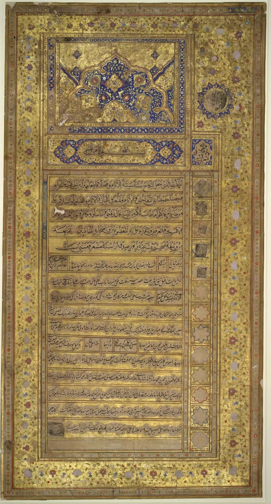

The facts sit in Islam's own trusted sources. You can make this point from their books alone.
A husband may divorce by pronouncement. After the third one it is final.
Quran 2:230 then says the woman is not lawful to him again "until she has married another husband."
Rifa'a's thrice-divorced wife wanted to return to him. The answer was: "No — not until he tastes your sweetness and you taste his sweetness" (Sahih al-Bukhari 5260).
That means the marriage in between must be consummated.
Halala, also called tahleel. It is an arranged marriage for one night, so a couple can remarry.
It is still sold as a service today, documented by the BBC in the UK. Instant triple talaq stayed live law until courts acted.
India struck it down in Shayara Bano in 2017 and made it a crime in 2019.
IslamQA 159041 answers on three fronts. An arranged halala is itself cursed and invalid, since the hadith condemn the muhallil, the man who makes her lawful.
The rule in 2:230 is a deterrent, meant to make men take divorce seriously. And instant triple talaq in one sitting, talaq-e-biddat, is a condemned innovation rather than original Islam.
They admit the rule itself. The curse only forbids saying the plan out loud.
Underneath, a thrice-divorced woman still cannot return until another man has consummated a marriage with her, and Bukhari 5260 puts that in Muhammad's own mouth. The deterrent framing concedes the mechanism, since the deterrent's payload is her body.
And it took a secular court, against the All India Muslim Personal Law Board, to end the trigger. Compare Jesus: divorce was allowed for hardness of heart, with no ritual requiring a woman's body as the price of reconciliation.
"Why should a woman have to sleep with another man before her husband can take her back?"

They say an arranged halala is cursed, and the rule is meant to deter divorce.
Muslims respond on three fronts. First, a contracted halala is itself cursed and invalid in the hadith. That is marrying with the prior intention of divorcing, in order to make the woman lawful again. The hadith condemn the muhallil, the one who makes lawful; see IslamQA 159041.
Second, the rule in 2:230 is a deterrent. It is designed to make men take divorce seriously. Third, instant triple talaq in one sitting, talaq-e-biddat, is a condemned innovation and not original Islam.
Strong for you: they grant the rule, and the deterrent is her body.
The curse on the muhallil only forbids saying the plan out loud. The rule underneath stands on any reading. A thrice-divorced woman cannot return to her husband until another man has consummated a marriage with her. Sahih al-Bukhari 5260 puts that in Muhammad's own mouth.
The deterrent framing grants the mechanism, since the payload of the deterrent is her union with another man. The secret halala trade is the rule's likely outcome. The BBC filmed it in the UK, and India has taken it to court. And it took a secular court, against the All India Muslim Personal Law Board, to kill the trigger practice.
Contrast Jesus. Divorce was allowed because of your hardness of heart (Matthew 19:8-9). No rite asks for the woman's body as the price of coming home.